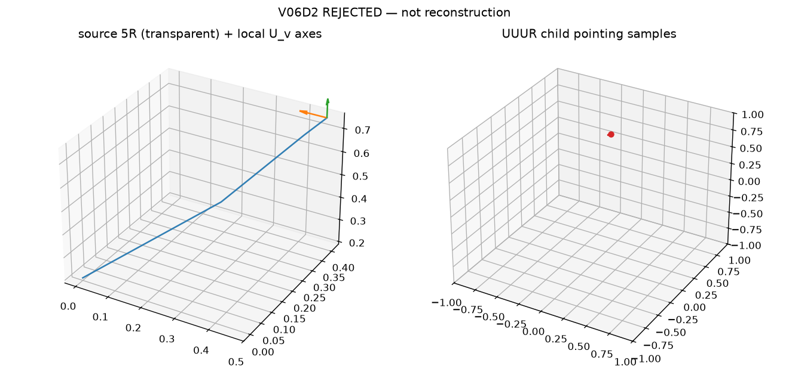

(d×n) virtual-U chart plus
one U_v-U_phys-U_phys-R comparison is not parent completeness, not a
six-family atlas, and not reconstruction. Child status is issued from the
certificate, never pre-accepted. Drive is pseudo-arclength s
from the H3 augmented corrector (ADR-044 / ADR-045). Local equivalence is
conjunctive (ADR-043).| architecture | axis_aggregation | closed_mechanism | status |
|---|---|---|---|
exact_two_u_5r | EXACT_GLOBAL | REJECTED | REJECTED |
near_two_u_5r | REJECTED | REJECTED | REJECTED |
generic_5r | REJECTED | REJECTED | REJECTED |

Reproduce:
PYTHONPATH=src python -m grashof_workspace.spatial_experiments.v06d2 --outdir results/kinematic_decomposition/v06d2